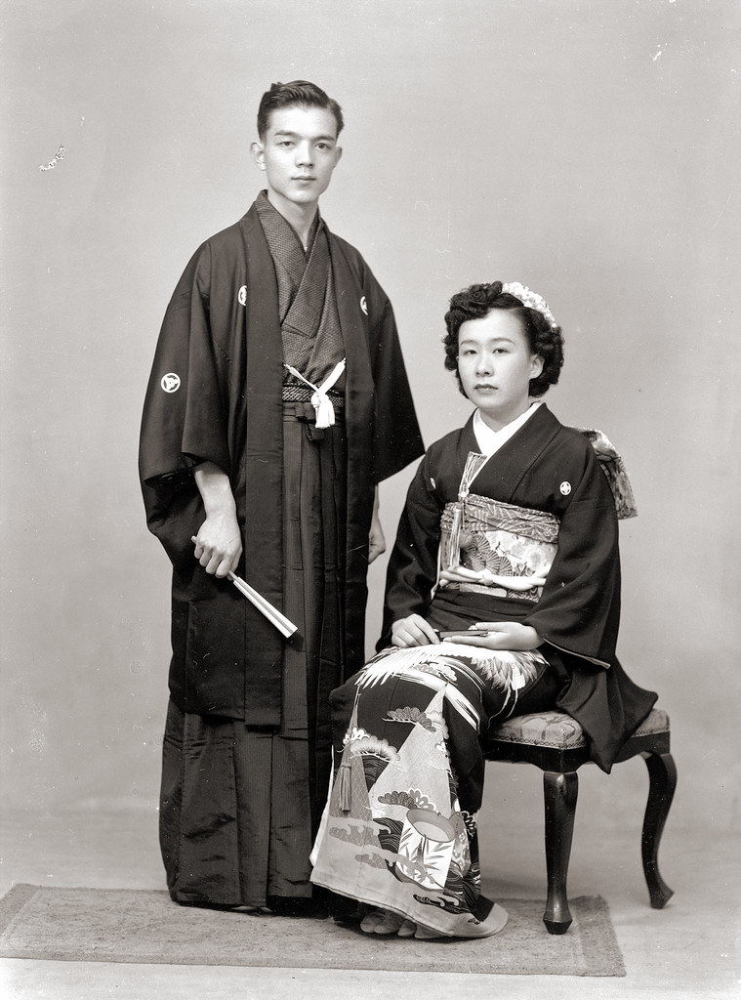
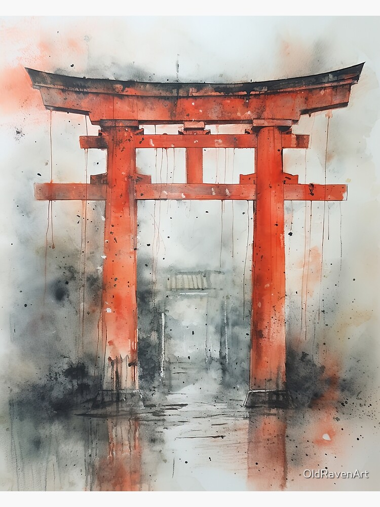

Japán kultúra témák szerint

Kimonó
A kimonó a hagyományos japán öltözet, melyet formális alkalmakkor, fesztiválokon és teaceremóniákon viselnek. A hajtási irány jelzésértékű.

Teaceremónia
A japán teaszertartás a spiritualitás és udvariasság megnyilvánulása. A nyugodt mozdulatok és precízség a zen buddhizmus hatását tükrözi.

Vallás
Japánban a sintó és a buddhizmus a két fő vallási irányzat. A templomlátogatás, imádkozás és szentélyek meglátogatása mindennapos szokás.